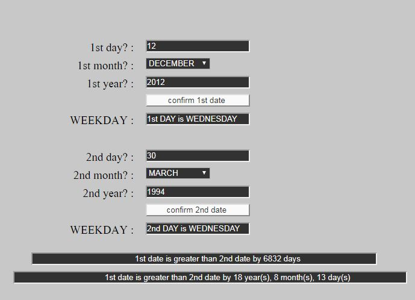

<h1 style="padding-left:4%;padding-top: 2%;padding-bottom: 2%;padding-right: 10%;border-bottom: 1px solid #BDBDBD;">


Age Counter Using Js 


</h1>


A program based on Js, Html &amp; Css


<h1><a href="https://shaikh-abrar-kabir.github.io/Age-Counter-Js/" target="_blank"> Run App </a> </h1>

<h2><a href="Calendar_Js.mp4" target="_blank"> Process </a></h2>




